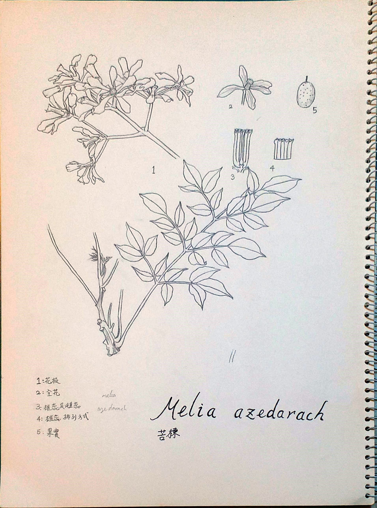

Lien Yi
- Born in: Taichung
- Study in: NCTU, Hsingchu
- Hobby: reading, growing plants, running and hiking
- Talent: Chinese flute
My name is Lien Yi. I live in Taichung. Although I live in
downtown, I really love nature, and spend a big part of my time in forest and
mountain. I always collect seeds, leaves,and flower in my trip
wherever I am.
In most of the time at home, I just read books to
relax. Sometimes I go out
for exercising: running. Besides, I play
Chinese flute in a chinese orchestra band.

hiking with my friends

Plant Scientific Drawing
of Melia azedarach